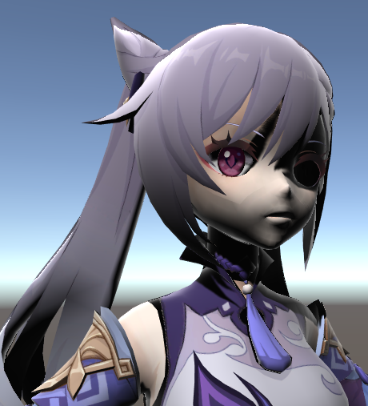
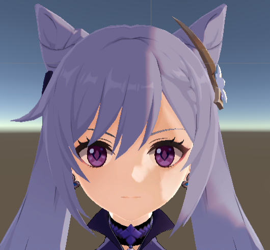

卡通渲染最基础的两部分应该就是梯度漫反射与描边。先来说比较简单的梯度漫反射，上图是最后的效果。
具体实现
大家学习shader的时候肯定都会尝试先写下最简单的兰伯特/半兰伯特光照模型，这里不用多说：
1 | float3 worldNormal = normalize(i.worldNormal); |
多乘了一个shadow参数是因为我还计算了光照投影，打算一起打包了做阴影颜色的梯度化。

因为用了兰伯特模型所以阴影部分是死黑不透气的……
这时候就需要写我们的梯度漫反射了。一般来说有直接用smoothstep函数梯度变化或者使用一张ramp图两种方法。
ramp图控制的方法
在PS制作了如上一张ramp图。ramp图代表不同明暗程度的区域需要取的阴影值。为了方便控制特地只16*16px的大小。
1 | //梯度阴影 |
得出的效果如下图
阴影颜色与ramp图里的颜色稍有不同是因为我们采取了乘因子在basecolor上，要让美术理解这一点的话，可以说ramp图是一个正片叠底的图层。
_ShadowRange是用户可调整的值，这个值越大，阴影变化得越平滑，梯度越不明显。

图分别为_ShadowRange值为20和60时的效果。
原神头发阴影模拟
对于一般的卡渲来上，上面的效果够用了。但是如果需要模仿原神头发阴影的卡渲效果，上面还不够相似。
观察一下原神的头发阴影，一般只有两个色阶，一个只在阴影明暗分界处存在一小段宽度，另一个作为主要的阴影颜色。
（图二的第二个色阶边缘有一些渐变我猜是因为在阳光下加了bloom的原因，如果猜错了也没办法，就按这样凑合做吧。）
本人没有去找过原神的逆向，所以也不知道原神色阶的具体实现方法。通过ramp图的方法模仿原神的效果也不是不可以，需要我们建立一张只有两个色阶的ramp图，并且一个色阶所占的行数远小于另一个色阶。
通过这种方式得到的效果看起来有些廉价，因为这里色阶边缘锐利程度和色阶梯度变化效果挂钩，（意思是想要阴影梯度化明显，就要接受肉眼可以观察到的锐利梯度边缘），利用ramp图来调整也不够方便，不同色阶之间没有过渡感。
更技术一点的方法
上述一种方法主要依靠ramp图的调整，主要是美术的活，那有没有什么可以在技术层面就达到这种效果的方法呢？
受了知乎上这位的卡渲实现方法的启发，这篇的作者在对于漫反射的梯度实现上，他采取了三个窗函数来控制梯度的变化，再根据窗函数的陡峭程度控制不同色阶内的模糊过渡。也就是说这个方法可以兼顾色阶的明显梯度变化和色阶间的过渡。
因为我们只有两个色阶，所以只需要两个窗函数，其他部分与他的代码差异不大，在此就不贴了。
（可以明显看出左右的模糊程度不同）
同时也可以暴露每个色阶的阴影颜色参数来供用户修改阴影的色相。
得到的效果还是可以接受的，可以稍微碰瓷一下原神了（误

减轻面部的漫反射
这点是为了营造卡通感，不给面部太多会营造真实感的漫反射，米哈游的技术总监也在unite的分享大会上说过这一点。
实现也很简单，通过一张面部的mask来控制漫反射的程度，在计算diffcolor时乘上一个系数就好。
（但是导入模型后发现刻晴面部是单独一个材质。所以针对这个模型，如果不想要保留部分漫反射的话其实不需要这么麻烦用mask，直接不给ramp图就可）

面部的投影
面部的投影如果直接使用unity内置的计算阴影的函数效果会非常奇怪。据说原神自己魔改了unity的渲染管线，让阴影做到完全贴合卡通绘画的习惯。

一看就让人不想要的面部阴影效果
除此之外想要修改面部投影效果，常见的两种方式是修改模型的法线和基于SDF的面部阴影贴图两种方式。这里就先不实现，如果未来有时间再进行面部阴影样式的实现。
——————————
（2021.8.13更新）
实现了基于SDF光照贴图的面部阴影效果，效果如下：